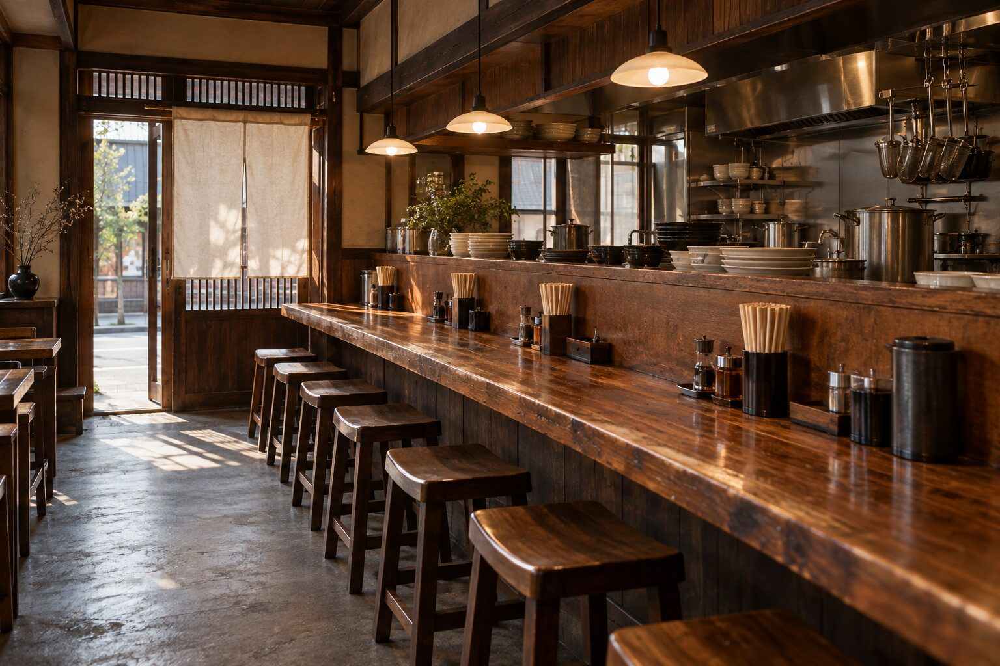

中華そば ぽす鈴
一杯に、
まごころを。
どこか懐かしい、いつもの味。
飾らず、まっすぐに。
飾らず、まっすぐに。
お知らせホームページを公開しました。 ›
01 ABOUT
ごあいさつ
今日も変わらぬ
中華そばを。
立ちのぼる湯気、醤油の香り。
箸を入れたときの、あの気持ち。
特別な日に食べるものではなく、
ふとした日に、また食べたくなるもの。
ぽす鈴が目指すのは、そんな一杯です。
令和八年に暖簾を掲げたばかりですが、
いつかこの街の「いつもの店」と呼ばれるよう、
日々、鍋と向き合ってまいります。
創業 令和八年老舗、
はじめました。中華そば ぽす鈴
はじめました。中華そば ぽす鈴
02 OUR TASTE

ぽす鈴のこだわり
一杯のために、
手間を惜しまない。
澄んだ醤油の香り
鶏の旨みを中心に、すっきりとした後口を目指した醤油仕立て。
スープになじむ麺
ひと口目から最後のひと口まで、無理なく箸が進む一杯を。
いつもの温かさ
肩肘張らずに立ち寄れる、町の中華そば屋でありたいと思います。
一杯一杯、まっすぐに。
また明日も、食べたい味。中華そば ぽす鈴
04 NEWS
お知らせ
お知らせ
ホームページを公開しました。
令和八年、ぽす鈴の暖簾を掲げました。
05 INFORMATION
店舗案内
中華そば ぽす鈴
- 屋号
- 中華そば ぽす鈴（ぽすりん）
- 創業
- 令和八年（二〇二六年）
- ご案内
- 営業情報は、こちらで順次お知らせいたします。
気軽に立ち寄れる、
街の中華そば屋に。
街の中華そば屋に。